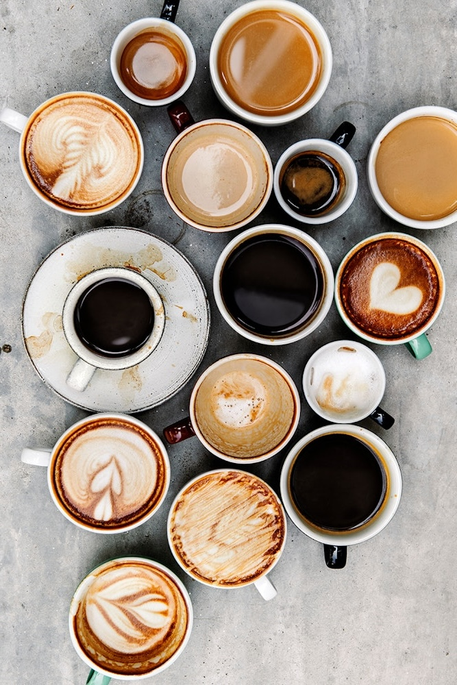

Discover the World of Coffee ☕
Welcome to our Coffee Explorer, where you can journey through the rich history and variety of your favorite brews.


Welcome to our Coffee Explorer, where you can journey through the rich history and variety of your favorite brews.
Start your exploration by selecting your favorite coffee style! Click on a coffee to jump to its recipe, history, and a fun fact that makes it unique.
Smooth, creamy, and the perfect balance between coffee and milk.
The latte's history goes back to the 17th century, but it became popular in America in the 1980s. The drink’s smooth texture comes from the blend of espresso and steamed milk, offering a less intense coffee experience.
Simple, strong, and bold.
Americano was created by American soldiers during World War II in Italy. They would dilute espresso with hot water to replicate the milder coffee they were used to back home.

Velvety, foamy, and perfect for mornings.
Cappuccino's roots trace back to Vienna, Austria, but the drink became popular in Italy in the 1900s. The signature foam topping was introduced as a way to soften the strong espresso flavor.

Chilled and refreshing, perfect for summer.
Cold brew coffee dates back to Japan in the 1600s, where it was known as "Kyoto-style" coffee. It gained modern popularity in the U.S. in the 2010s for its smooth, less acidic taste.
A decadent blend of coffee and chocolate.
Named after the city of Mocha in Yemen, this drink has roots in the ancient coffee trade. The combination of chocolate and coffee became widely popular in Europe and the U.S. in the 20th century.
A sweet, icy blend of coffee and cream—perfect for a cool, refreshing treat.
The Frappuccino was invented by Starbucks in 1995. It quickly became a favorite for coffee drinkers who craved a dessert-like treat with the kick of coffee. While many associate it with Starbucks, the drink has since inspired variations across different coffee shops.
The references listed below include all the works cited or consulted in the preparation of this document. All sources are credited to ensure proper attribution of ideas, facts, and quotes.